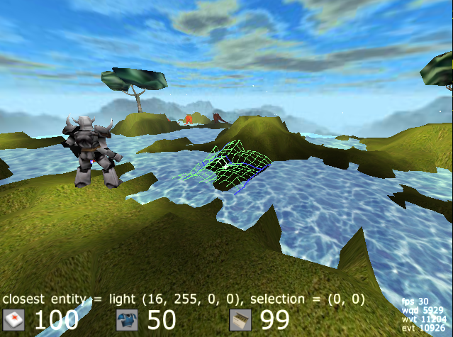
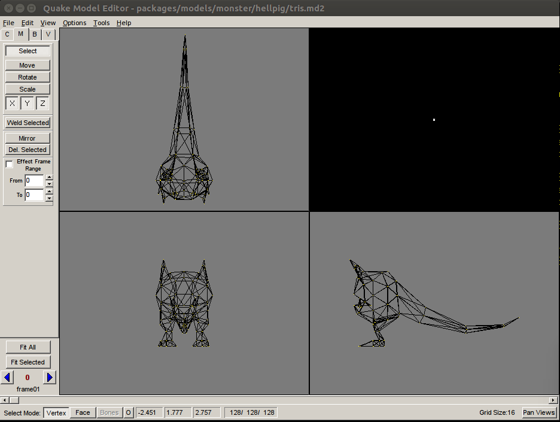

cube-zero
Description:
3D video game and game engine.
Battle in single player mode fighting alongside the Hellknight.
Together you must rid grafland's wild frontier of hopping 2 legged
pragma spawns. In order to do this you may have to battle until your
alliance is lost! Or you may choose to edit a new reality and create a
structure with which to defend yourselves from the ever encroaching
pragmas and the evil they represent.
Image of cube-zero's gameplay:

Technical Description:
Cube-zero is a (complete) rewrite of the Cube 1 game engine. It focuses
on the daunting task of rewriting the game in idiomatic C, removing
ancient compiler warnings/incompatibilities and creating new free
textures with which to build games. Cube 1 is over 20 years old.
Cube-zero helps to bring it back to life and create a new free building
and learning environment for free software enthusiasts and developers.
Incidently, These changes also allows the game to be sold for commercial
gain in its entirety as per its permissive MIT and zlib licensing.
Changes:
All non-free textures were removed from the package base.
The enet library is now completely removed from the source code. This
dropped 3400 lines, greatly increasing the readability of the project.
3000 lines of compiler warnings were fixed by researching each warning
and adding the needed changes. No extra compiler flags are used to
suppress these warnings.
A method for translating and moving code out of the game and into a
seperate C library was established. This code is located under
src/c-game/ and over 1000 lines have been translated to C and put into
it.
Multiplayer modes were removed. This dropped nearly 1000 lines of code
and helped to narrow the game down to its initial intended implementation
of a single player game.
A model-editor was included with the packages. It's relatively hard to
hunt down a model editor that will edit the old quake md2 player models
so the inclusion of the editor helps to solidify the project and ensure
significant future changes.
Model Editor:
A free ware version of the Quake MD2 player model editor is included
with cube-zero. This program needs to be ran in the WINE windows
emulator. It would be nice to replace this with a source code version
of Blender3D or mm3d that would run and compile natively on linux.
To use the model-editor invoke it with `wine'. Here is an example which
opens the "hellpig" player model for editing:
wine model-editor/MDL.EXE packages/models/monster/hellpig/tris.md2
You will need to have the WINE windows emulator installed. If you are
using a debian or ubuntu based distro it can be installed with:
sudo apt-get install wine
To edit the model wire frame click the tab labeled "C" and then click
"build face". At this point you should be able to click and drag to
modify the player model.
An image of the editor in use:

Building:
On a Unix-like system invoke `make' in the main directory.
make
Legacy systems are not supported.
Several development headers are required. If you are using a
debian or ubuntu system you can install a partial list of them
using:
sudo apt-get install libsdl1.2-dev \
libsdl-mixer1.2-dev xorg-dev
Run the game:
make run
or
./bin/grafcube -t
or fullscreen mode:
./bin/grafcube
Project Goals:
Write as much of the game as possible in C.
Remove superfluous features.
Replace all textures with ones gathered from the field.
Write new music for the game using mainly acoustic cello.
Create new sound effects, weapons and MD2 objects.
Create a new MD2 player models with an open source license.
Remove non-free components.
Editing:
/waterlevel N Set water level at N
/map mapname Load a map
/newmap Create a new map
/savemap Save a map
insert key toggle floor textures
/perlin Generate terrain automatically
Website:
http://www.csit.parkland.edu/~cgraff1/cube-zero
Revision Control:
https://github.com/cmgraff/cube-zero
Contact:
cm0graff@gmail.com
References:
http://assault.cubers.net/docs/cubeengine.html
https://opengameart.org